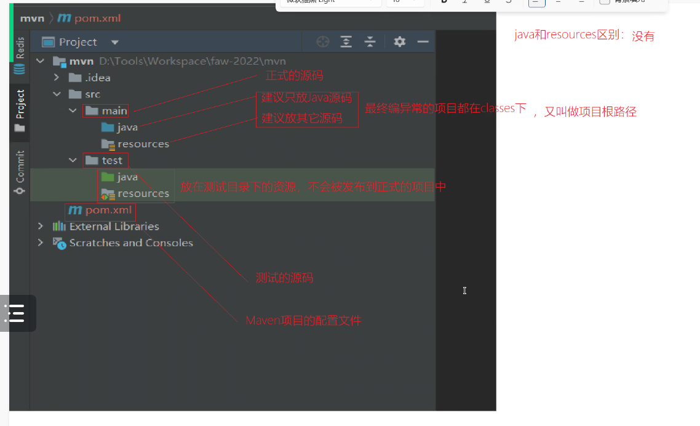

9月13日Spring笔记
发布时间：
本文字数：544 字 阅读完需：约 3 分钟
项目管理工具 Maven
使用Maven 创建的项目，名字叫Maven 项目。Maven 项目分为：Java项目和web项目，注意：Maven项目目录和普通的目录不同

放在测试目录下的资源，不会被发布到正式的项目中
pom.xml 解析
<?xml version="1.0" encoding="UTF-8"?>
<project xmlns="http://maven.apache.org/POM/4.0.0"
xmlns:xsi="http://www.w3.org/2001/XMLSchema-instance"
<!-- xsd 文件：描述文件，约束pom.xml格式 -->
xsi:schemaLocation="http://maven.apache.org/POM/4.0.0 http://maven.apache.org/xsd/maven-4.0.0.xsd">
<!-- model版本为4.0 -->
<modelVersion>4.0.0</modelVersion>
<!-- groupId一般为网址倒序 -->
<groupId>com.zr</groupId>
<artifactId>mvn-1</artifactId>
<!-- 版本号：正式发布版本用整数1.0,2.0等，内测版本用小数 -->
<version>1.0-SNAPSHOT</version>
<properties>
<!-- java版本为8 -->
<maven.compiler.source>8</maven.compiler.source>
<maven.compiler.target>8</maven.compiler.target>
</properties>
<!-- 以下添加依赖包 -->
<dependencies>
<dependency>
<groupId>junit</groupId>
<artifactId>junit</artifactId>
<version>4.13.2</version>
<scope>test</scope>
</dependency>
</dependencies>
</project>
junit 单元测试
在test文件夹下的测试类中
package com.faw;
import org.junit.Test;
public class FawTest {
// 后置方法
@After
public void t1(){
System.out.println("t1");
}
@Test
public void t2(){
System.out.println("t1");
}
// 前置方法
@Before
public void t3(){
System.out.println("t1");
}
}
Spring 的特点
- 轻量级 Spring 是非侵入性的 - 基于 Spring 开发的应用中的对象可以不依赖于 Spring 的 API
- 依赖注入(DI --- dependency injection、IOC)
- 面向切面编程(AOP --- aspect oriented programming)
- 容器 Spring 是一个容器, 因为它包含并且管理应用对象的生命周期
- 框架 Spring 实现了使用简单的组件配置组合成一个复杂的应用 在 Spring 中可以使用 XML 和 Java 注解组合这些对象
- 一站式 在 IOC 和 AOP 的基础上可以整合各种企业应用的开源框架和优秀的第三方类库 （实际上 Spring 自身也提供了展现层的 SpringMVC 和 持久层的 Spring JDBC）
引入Spring 的方法
利用Maven引入相关包
pom.xml文件示例
<?xml version="1.0" encoding="UTF-8"?>
<project xmlns="http://maven.apache.org/POM/4.0.0"
xmlns:xsi="http://www.w3.org/2001/XMLSchema-instance"
xsi:schemaLocation="http://maven.apache.org/POM/4.0.0 http://maven.apache.org/xsd/maven-4.0.0.xsd">
<modelVersion>4.0.0</modelVersion>
<groupId>org.example</groupId>
<artifactId>SpringIOC</artifactId>
<version>1.0-SNAPSHOT</version>
<dependencies>
<dependency>
<groupId>junit</groupId>
<artifactId>junit</artifactId>
<version>4.12</version>
<scope>test</scope>
</dependency>
<dependency>
<groupId>org.springframework</groupId>
<artifactId>spring-core</artifactId>
<version>5.3.22</version>
</dependency>
<dependency>
<groupId>org.springframework</groupId>
<artifactId>spring-beans</artifactId>
<version>5.3.22</version>
</dependency>
<dependency>
<groupId>org.springframework</groupId>
<artifactId>spring-context</artifactId>
<version>5.3.22</version>
</dependency>
</dependencies>
<properties>
<maven.compiler.source>8</maven.compiler.source>
<maven.compiler.target>8</maven.compiler.target>
</properties>
</project>
Spring 核心
- IOC (控制反转)
- DI (依赖注入)
- AOP (面向切面编程)
控制反转(IOC): 对象创建的控制权油编程人员控制，反转成由Spring框架控制
Spring 第一个项目示例
spring.xml
<?xml version="1.0" encoding="UTF-8"?>
<beans xmlns="http://www.springframework.org/schema/beans"
xmlns:xsi="http://www.w3.org/2001/XMLSchema-instance"
xsi:schemaLocation="http://www.springframework.org/schema/beans http://www.springframework.org/schema/beans/spring-beans.xsd">
<bean id="person" class="com.zr.vo.Person"></bean>
<bean id="dog" class="com.zr.vo.Dog"></bean>
</beans>
SpringTest.java
package com.zr;
import com.zr.vo.Dog;
import com.zr.vo.Person;
import org.springframework.context.ApplicationContext;
import org.springframework.context.support.ClassPathXmlApplicationContext;
public class SpringTest {
public static void main(String[] args){
ApplicationContext ac = new ClassPathXmlApplicationContext("spring.xml");
Dog dog = (Dog)ac.getBean("dog");
Person person = ac.getBean(Person.class);
System.out.println(dog);
System.out.println(person);
}
}
Powerd by YlBlog(玉龙博客)